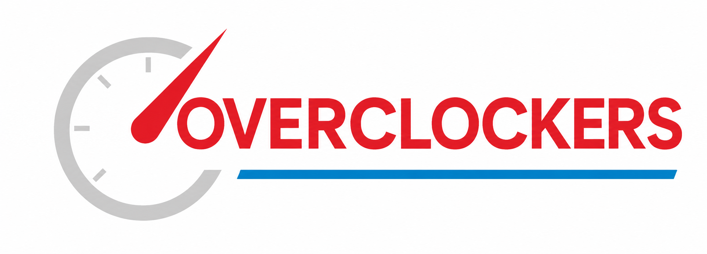

Manutenções em geral para a sua empresa
A manutenção de computadores para empresas em Sorocaba
Corporativos: A forma mais vantajosa para empresas. Os planos incluem manutenções preventivas mensais que evitam travamentos e lentidão, reduzindo custos em até 30% quando comparado a chamados avulsos.
Suporte Remoto: Resolução ágil de problemas de software, lentidão e vírus através de ferramentas de acesso remoto (como AnyDesk).
Suporte Presencial e Infraestrutura: Atendimento local para reparo de hardware, limpeza física de peças, montagem de redes e manutenção de servidores.
cybersecurity:
Segurança de Endpoints: Uso obrigatório de antivírus corporativos modernos (EDR) em todas as máquinas de funcionários.
Trabalho Remoto Seguro: Implementação de redes virtuais privadas (VPNs) e autenticação de dois fatores (MFA) para acessos externos.
Rotina de Backups: Cópias de segurança automatizadas e isoladas da rede principal (regra 3-2-1) para evitar perda total por sequestro de dados.
Conscientização: Treinamentos rápidos para colaboradores não caírem em golpes de phishing por e-mail ou WhatsApp.